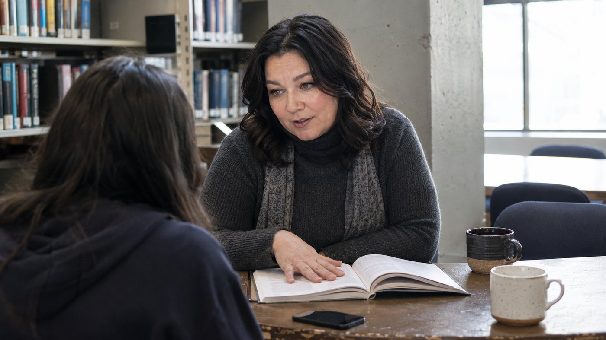
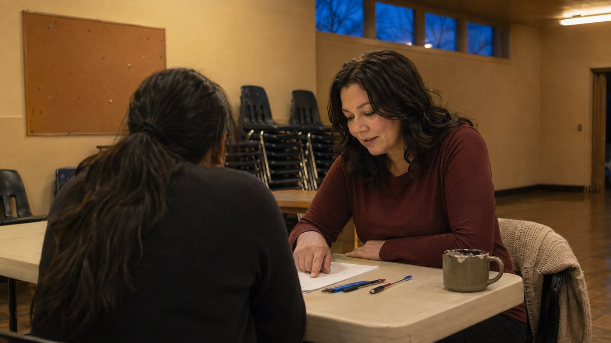
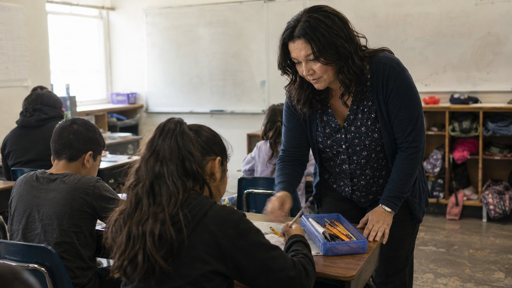
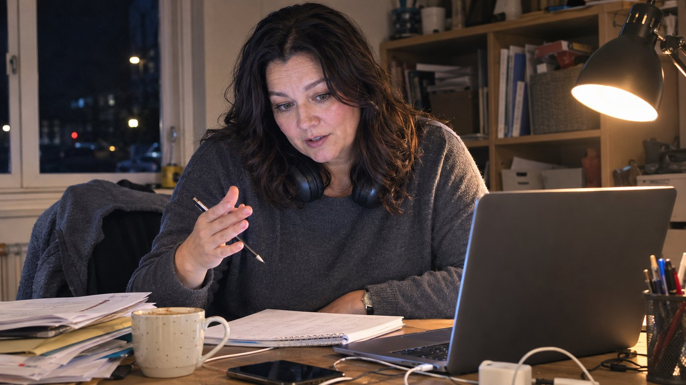
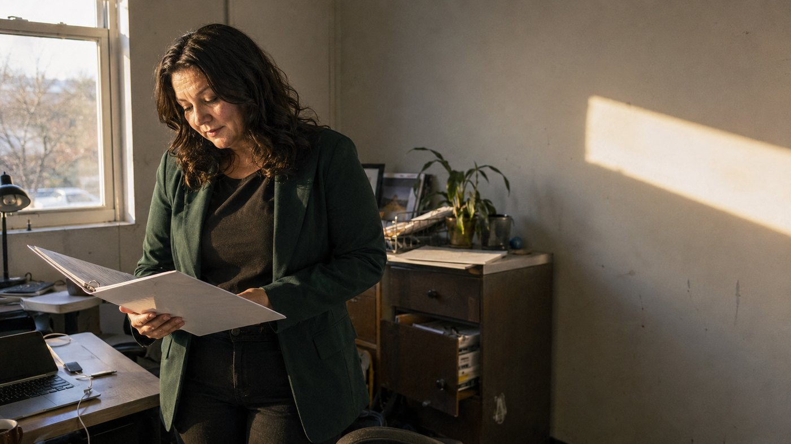
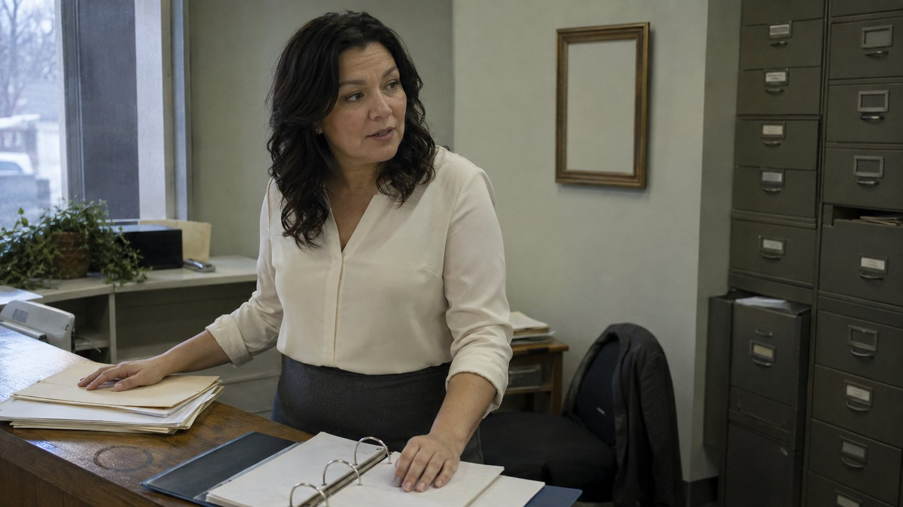

About
Marinella A. Chvatal is the founder and chief executive officer of Resilient Pathways Tutoring LLC, which she started in Richland, Washington in 2020. The company provides in-person and remote tutoring, adapting to each student's needs with flexibility and dedication, across primary, secondary, post-graduate and graduate levels as well as English as a second language for adults.
She came to it the long way. A literacy tutor with AmeriCorps in 2015, then a substitute paraeducator and substitute teacher with Pasco School District 1 across eight years, then a tutor with Varsity Tutors. Ten years in classrooms and beside desks before the company existed.
Her qualifications track the same widening question. A bachelor's degree in community services from Saint Martin's University with a minor in music and a concentration in social work. An Associate of Arts and Sciences in intermedia and multimedia from Columbia Basin College. A master's in education specialising in inclusive learning from Heritage University. And a Master of Social Work in clinical social work from Carroll College. She has also served her community as a board member of the Arc of Tri-Cities and as a coalition representative for the Coalition of Health Benton City.
What she teachesThe years where a gap either closes or compounds. Eight years of substitute teaching and paraeducation in a public district sit behind this.
Support at the level where the work is independent and the help has to be too. Held by someone who has completed two master's degrees herself.
Adult learners carrying jobs and families alongside the language. Flexibility is not a courtesy here, it is the only thing that makes it possible.
Her master's specialisation. Students who have been told they are behind are usually being taught in a way that was never built for them.
Soroptimist Award
Award for Service in the Community
Golden Heart Award for Service in the Community
Governor's Award, Girl Scouts of America
Listed in her Marquis Who's Who placement, January 2025. Board member, Arc of Tri-Cities. Coalition representative, Coalition of Health Benton City. Member, Catholic Daughters of the Americas.
Read it in order. Resilient Pathways is not where this started, it is what the previous decade turned into.

AmeriCorps · 2015 to 2016
A year of service spent on the single skill everything else in school depends on. The start of the through line.

Pasco School District 1 · 2016 to 2024
Eight years across a public district, in a different room most weeks. Few jobs show you as many ways a student can be failed by a system, or as many ways to catch one.

Varsity Tutors · 2021 to 2023
One to one at national scale, and a working education in what remote teaching can and cannot do.

Resilient Pathways Tutoring LLC · 2020 to present
In person and remote, primary through graduate, and adult ESL. The plan is to hire, so that the flexibility survives the demand.

Chvatal King Law · 2023 to present
Alongside the company, and following more than twenty years assisting part time at Chvatal Law Offices. The administrative spine behind everything else.
Founder and CEO, Resilient Pathways Tutoring LLC
Resilient Pathways Tutoring works with students in Richland, Washington and remotely. No public contact address is published for the company, so none is invented here. The enquiry route below is awaiting confirmation from Marinella.
Contact route pending confirmation© 2026 Marinella A. Chvatal. Biographical detail on this page is drawn from her Marquis Who's Who placement of January 2025. No statistics, awards, quotations or affiliations appear here that are not stated there. Photography is illustrative.